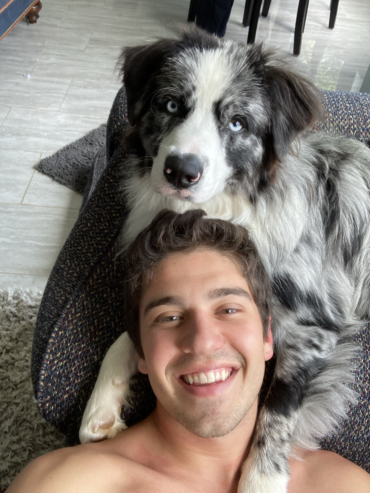

<!--        Homepage Extends the Base Template        -->
{% extends "PetWatch\index.html" %}

<!--        Load Static Files       -->
{% load static %}

<!--        Fill in the available blocks        -->
<!-- tabTitle -->
{% block tabTitle %}
    About PetWatch
{% endblock %}

<!-- tabTitle -->
{% block styleSheet %}../../static/PetWatch/dist/css/about.css{% endblock %}

<!-- tabTitle -->
{% block scriptFile %}../../assets/js/ie10-viewport-bug-workaround.js{% endblock %}

<!-- content -->
{% block content %}
<div class="about">
    
    <div class="text">
        <h2>About Us</h2>
        <h5>Michael Gagliardi <span>CEO</span></h5>
        <h5>Finn Gagliardi <span>CWO (Chief Walk Officer)</span></h5>
            <p>Growing up, I never had a dog. When I finally got Finn he changed my life. Finn and I love to run, hike, swim, and play. Finn is family, but unfortunately he isn't allowed to travel everywhere I need to go. Rather than sending him to a kennel, I decided to create PetWatch. The goal of PetWatch is to link pet owners and loving homes, so that even though you may be gone your pet will still be treated like <i>family</i>.</p>
        <div class="data">
            <a href="{% url 'PetWatchApp:contact' %}" class="contact">Contact Us</a>
        </div>
    </div>
</div>
{% endblock %}
